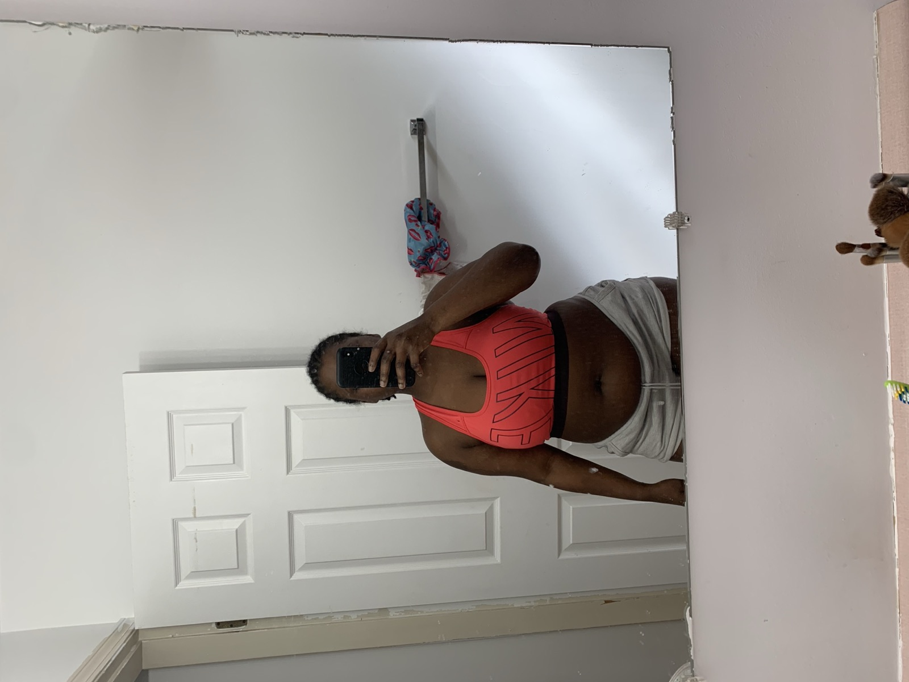
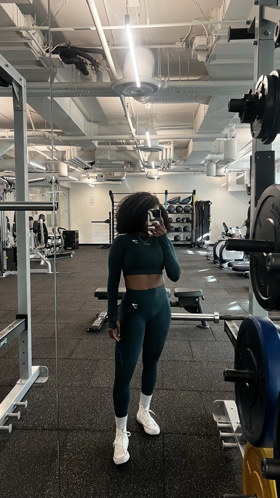

About
Hi, I'm Temi
I coach strength and nutrition in Vancouver, BC — in person if you're local, online if you're not.
I know what it's like to feel stuck in your own body with no idea where to start. That's not a line I use to sell coaching. That was me in 2019 — and if any of that sounds familiar, that's exactly why I do this.
Why I get it
How I got here
Here's the short version, because I think it matters that you know where this comes from.
I moved to Canada from Nigeria in 2016 as a student. For a few years I was active on and off — never consistent, never really committed to anything.
2018 into 2019 was the hardest stretch I've had. I wasn't in good shape, I didn't have a career to speak of, and I was sliding into the early stages of depression. Late in 2019 I took a sales job, then moved to the corporate side of the same company.
Then Covid hit.
We were all sent home, and I noticed something uncomfortable about myself: I had no hobbies. My whole life had been built around other people. I had work, and then nothing.
So I got bored. Really bored. And I went looking for something I could fall in love with and never get tired of.
I started with long walks. Long walks turned into easy runs. In October 2020 I ran my first 5K without stopping, and that was it — I was in love with running.
That 5K became a 10K. The 10K became half marathons. The halves became three full marathons. I couldn't find a single hobby in 2020; I've since run 42 kilometres three times over.
Somewhere in there I found baking, too. I love feeding people — my friends tell me it's my love language, and they're not wrong.
Losing that much weight through running came with something nobody had warned me about. I'd gone lean, but I'd lost a good amount of muscle along with the fat. I was smaller — I wasn't strong.
So I started lifting to build it back, and I fell in love with that too. It's the part that actually changed how I feel in my body, not the number on the scale. It's why I coach strength now, and why I won't build you a plan that's only about getting smaller.
Friends and family started asking me for help, and I began training a few of them on the side. That's really where this started — not from a certification, but from watching people I cared about feel exactly the way I used to feel, and realizing I finally knew how to help.


Four years apart. Not four weeks — and that gap is the honest part. Nothing here happened quickly, and I'd rather you knew that before you started than afterwards.
Being honest
Everything I tried first didn't work
Before any of it clicked, I tried everything — keto, juice-only days, barely eating at all. I'm saying that out loud because the internet is full of people who skip this part and pretend they found the answer right away.
None of it worked. Not one.
What finally worked was boring. I ate the food I actually love, just less of it. I moved more. I cut out processed sugar. No plan I hated, no food I was afraid of, nothing I had to white-knuckle through.
That's why I coach the way I do. I won't hand you a plan built on willpower, because I know exactly how that ends.
Why I coach
Because stuck is a lonely place
I know what that feels like, and how isolating it is when you don't know where to start.
I want people to feel happy in their own body. I want them to find something they genuinely enjoy — a workout, a walk, a meal — instead of something they're enduring. Nobody should have to force themselves to train, or to eat well. You should be able to love what you eat and still be healthy. Those two things were never actually in conflict.
This is the coaching I wish I'd had in 2019. I couldn't find it, so I built it.
Who I'm for
People who feel stuck
Anyone who wants to do better for their health and doesn't know what to do next. You don't need to be fit already. You don't need to have any of it figured out — working that part out is the job.
I'm not the right coach for someone hunting a shortcut, or for someone who's already decided nothing will work. I'll build the plan and show up for the hard weeks — but I can't want it for you.
The shift
What actually changes
Not just the number on the scale.
- The plan making sense
- Eating food you like, without guilt
- Training because you want to, not to punish yourself
- Feeling strong instead of just smaller
That's the whole point.
If you want to see what that's actually looked like for other people, that's what the Results page is for.
Start here
Come say hello
Thirty minutes, no cost, no pitch. Worst case, you leave with a clearer idea of what you actually need.
If that's the kind of coaching you've been looking for, let's talk.